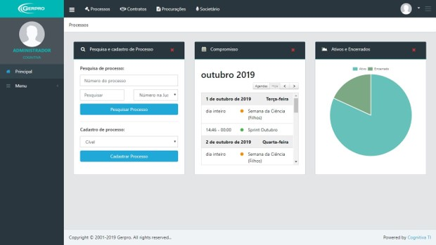
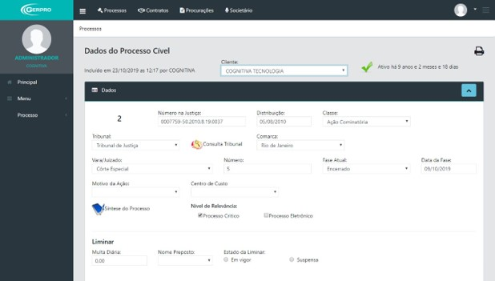

Plano Único Gerpro
Tenha total controle dos seus processos por apenas R$99,00 mensais
O sistema Gerpro é um software desenvolvido pela Cognitiva há 24 anos e é fundamentado em quatro pilares essenciais:
1. Automatização: O Gerpro é projetado para automatizar uma variedade de tarefas, tornando os processos mais eficientes e reduzindo o tempo gasto em atividades manuais.
2. Workflow: O sistema Gerpro oferece uma gestão de fluxo de trabalho integrada, facilitando a coordenação de tarefas e a colaboração entre equipes.
3. Personalização: A flexibilidade do Gerpro permite que ele seja personalizado para atender às necessidades específicas de cada cliente ou organização. Isso garante que o software seja adaptável a uma ampla gama de demandas.
4. Design: O Gerpro é desenvolvido com um foco especial no design, proporcionando uma interface intuitiva e amigável, o que facilita a sua utilização por uma ampla variedade de usuários, independentemente do tamanho da empresa ou escritório.
Relatórios e Pesquisa avançada
Com o sistema Gerpro, você pode facilmente criar pesquisas em qualquer campo e área do sistema, permitindo a coleta de informações abrangentes, desde dados financeiros até intimações e muito mais. Tudo isso pode ser consolidado em um único relatório personalizado, simplificando a análise e tomada de decisões.

